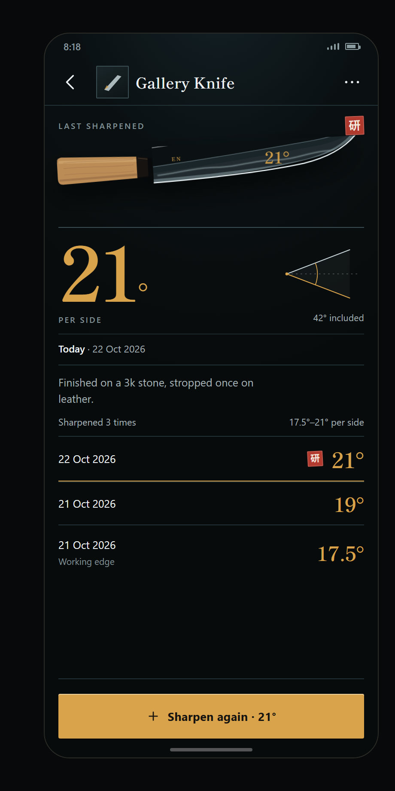
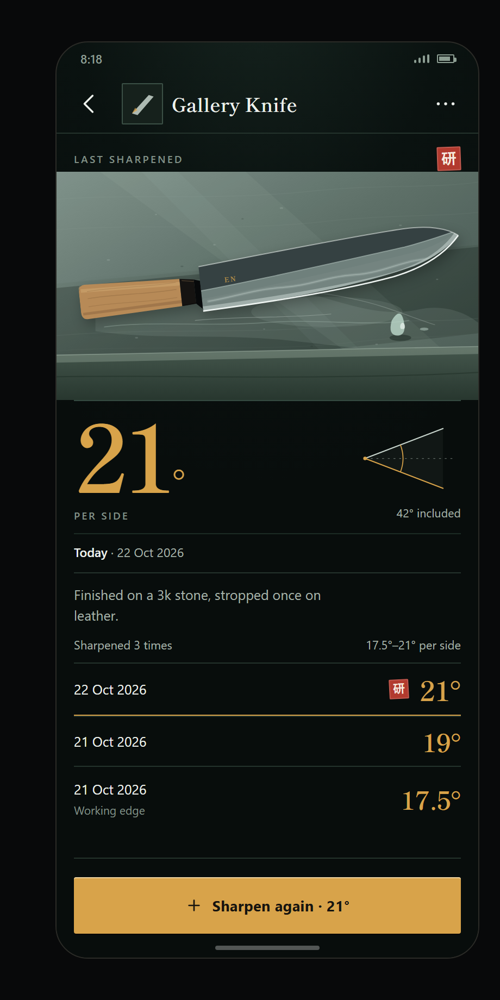
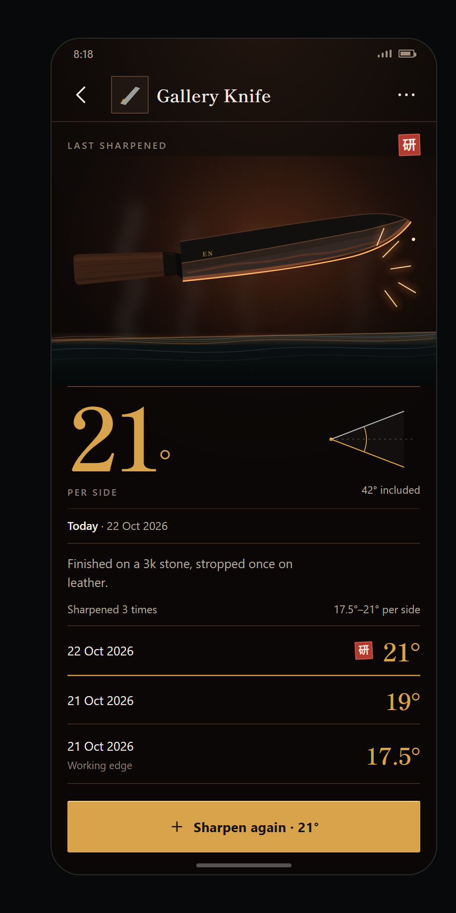

Three directions, one knife page
Edge Notes · 390 × 844 · sample data · prototype only

The knife carries the page. Lowest risk, strongest at-a-glance read.

The stone becomes the page. The log sheet is where this one comes alive.

The save is the show. The most cinematic, and the easiest to overdo.